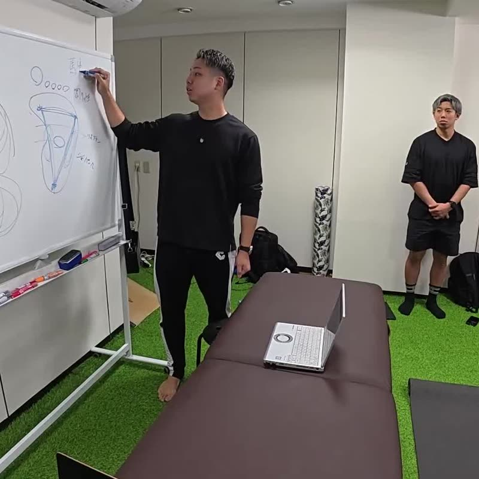

Method
技術の考え方
どの講座にも共通する、身体の見方と進め方。
専門用語に頼らず、何をどの順で考えるのかをまとめました。
Whole body
一部ではなく、
全体の関係を見る。

痛みや不調を訴える場所と、変化を起こすべき場所が同じとは限りません。足の使い方が膝や腰に、呼吸や顎の状態が首や肩に影響していることもあります。
そこで講座では、骨・筋・関節といった構造だけでなく、神経系による感覚の入力と出力、内臓や呼吸、日常の動き方まで含めて、身体を一つのつながりとして捉える練習をします。
例：美姿勢コンディショニングでは、姿勢を「感覚を統合した結果（出力）」として捉え、評価から運動までを順に練習します。



Assess → Intervene → Re-assess
評価 → 介入 → 再評価
技術そのものよりも先に、この順番を身につけることを大切にしています。
- Assess
評価する
姿勢、関節の動き、触れたときの反応などを決まった基準で見て、いまの状態を記録します。
- Hypothesis
考える
評価の結果から、どこに、何から働きかけるかの見立てを立てます。
- Intervene
介入する
手技・ストレッチ・運動などから、見立てに合った手段を選んで行います。
- Re-assess
再評価する
最初と同じ基準で見直します。変化がなければ見立てに戻ります。

再評価は「うまくいったか」を確かめるためだけでなく、次の一手を決めるための材料です。

From treatment to movement
施術で終わらせず、
動きへつなぐ。
施術で起きた変化は、お客様が日常で身体を使う中で試されます。そこで、施術の後にどんな動作や運動を行えば変化を活かしやすいかまでを、一つの流れとして設計します。
トレーナーにとっては運動指導の前に身体を整える手段として、セラピストにとっては施術の効果を日常へつなげる手段として、それぞれの現場で使える形を目指します。
Common principles / Specialties
共通の原則と、
各講座の専門性

すべての講座に共通すること
- 評価 → 介入 → 再評価の順で進める
- 身体を部分ではなく関係で捉える
- 施術を動作・運動へつなげる
- 何をして何が変わったかを言葉で説明する
講座ごとに深めること
- 手・足：土台と感覚の入り口としての評価と手技
- 頭部・姿勢：耳・顎・顔・頭皮・首、姿勢の評価
- 関節・ストレッチ：関節調整法、経絡に沿ったストレッチ
- 内臓・全身：内臓・神経へのアプローチと全身の施術設計


Safety
安全性と適用の判断
行わない判断も技術に含める
評価の結果、施術や運動を行うべきでない、あるいは医療機関の受診を勧めるべき状態がないかを確認します。
医療行為との線引き
講座で扱うのは、医療機関での診断や治療に代わるものではありません。受講者の資格や業務範囲に合わせた活用を前提とします。
結果と限界を伝える
変化が見られたことも、見られなかったことも、お客様にそのまま伝えます。効果を約束する説明はしません。
仕組みの説明は慎重に
作用の仕組みが十分に解明されていない内容は、仮説や考え方として区別して伝えます。
Update
学び直し、更新し続ける。
技術も、その説明も、完成形ではありません。新しい知見や現場での経験に合わせて、教材や説明の仕方を見直していきます。
受講した人が「前に習ったことと違う」と感じたときも、なぜ変わったのかを説明できる教育でありたいと考えています。